| No. | Title | Tracklist (Lyrics / Music / Arrangement) |
Format Label – Catalog Number Release Date |
Tie-up | Related |
| Cover | |||||
| First Released | |||||
| 1st | Good-bye My Loneliness | 1. Good-bye My Loneliness(Lyrics: Izumi Sakai / Music: Tetsuro Oda / Arrangement: Masao Akashi) 2. Ai wa Kurayami no Naka de（愛は暗闇の中で）(Lyrics: Izumi Sakai / Music: Seiichiro Kuribayashi / Arrangement: ZARD, Hiroshi Terao) | 8cm CD PO・b.gram – PODH-1029 1991.02.10 Cassette PO・b.gram – POSH-1029 1991.02.10 8cm CD B-Gram Records – BGDH-1010 1993.09.01 12cm CD B-Gram Records – JBCJ-6017 (30th Anniversary Edition) 2020.02.10 |
Fuji TV Network drama “Kekkon no Risou to Genjitsu”（結婚の理想と現実）Theme Song (#1) Clarion（クラリオン）Karaoke CF Song (#1) |
Wiki PV/CM |
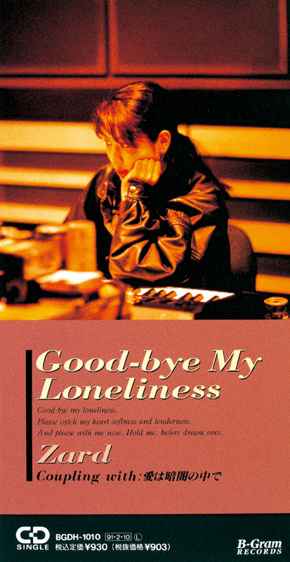 | |||||
| 1991.02.10 | |||||
| 2nd | Fushigi ne... 不思議ね… |
1. Fushigi ne...（不思議ね…）(Lyrics: Izumi Sakai / Music: Tetsuro Oda / Arrangement: Masao Akashi) 2. Sunao ni Ienakute（素直に言えなくて）(Lyrics & Music: Izumi Sakai / Arrangement: Masao Akashi) | 8cm CD PO・b.gram – PODH-1040 1991.06.25 Cassette PO・b.gram – POSH-1040 1991.06.25 8cm CD B-Gram Records – BGDH-1011 1993.09.01 12cm CD B-Gram Records – JBCJ-6018 (30th Anniversary Edition) 2020.02.10 |
Nippon TV Network quiz show “Magical Zunou Power!!”（マジカル頭脳パワー!!）Ending Theme (#1) | Wiki PV/CM |
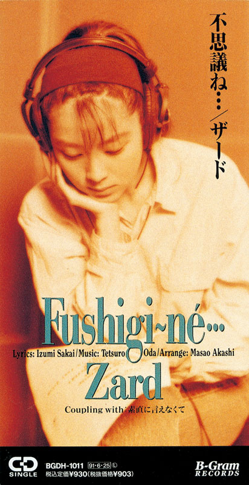 | |||||
| 1991.06.25 | |||||
| 3rd | Mou Sagasanai もう探さない |
1. Mou Sagasanai（もう探さない）(Lyrics: Izumi Sakai / Music: Tetsuro Oda / Arrangement: Masao Akashi)
2. Konna ni Aishitemo（こんなに愛しても）(Lyrics: Izumi Sakai / Music: Seiichiro Kuribayashi / Arrangement: Masao Akashi)
3. Mou Sagasanai（もう探さない）(original karaoke) 4. Konna ni Aishitemo（こんなに愛しても）(original karaoke) |
8cm CD PO・b.gram – PODH-1060 1991.11.06 Cassette PO・b.gram – POSH-1060 1991.11.06 8cm CD B-Gram Records – BGDH-1012 1993.09.01 12cm CD B-Gram Records – JBCJ-6019 (30th Anniversary Edition) 2020.02.10 |
TV Asahi Network drama “Shichinin no Onna Bengoshi II”（七人の女弁護士II）Theme Song (#1) | Wiki PV/CM |
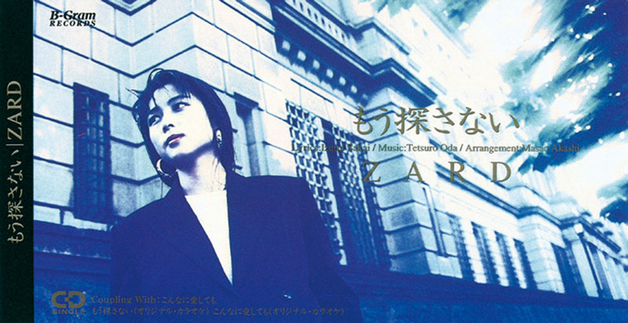 | |||||
| 1991.11.06 | |||||
| 4th | Nemurenai Yoru wo Daite 眠れない夜を抱いて |
1. Nemurenai Yoru wo Daite（眠れない夜を抱いて）(Lyrics: Izumi Sakai / Music: Tetsuro Oda / Arrangement: Masao Akashi, Daisuke Ikeda)
2. Dangerous Tonight(Lyrics: Izumi Sakai / Music: Seiichiro Kuribayashi / Arrangement: Masao Akashi)
3. Nemurenai Yoru wo Daite（眠れない夜を抱いて）(original karaoke) 4. Dangerous Tonight (original karaoke) |
8cm CD PO・b.gram – PODH-1087 1992.08.05 Cassette PO・b.gram – POSH-1087 1992.08.05 8cm CD B-Gram Records – BGDH-1013 1993.09.01 12cm CD B-Gram Records – JBCJ-6020 (30th Anniversary Edition) 2020.02.10 |
TV Asahi Network wide show “Tonight”（トゥナイト）Ending Theme (#1) TV Asahi Network drama “Love Story wo Kimi ni '92 〜Nemurenai Yoru wo Daite〜”（ラブストーリーを君に'92〜眠れない夜を抱いて〜）Theme Song (#1) |
Wiki PV/CM |
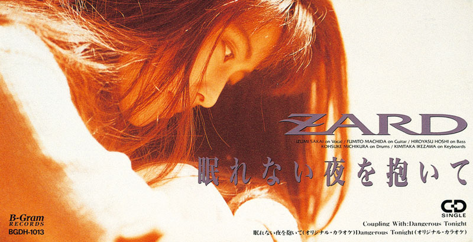 | |||||
| 1992.08.05 | |||||
| 5th | IN MY ARMS TONIGHT | 1. IN MY ARMS TONIGHT(Lyrics: Izumi Sakai / Music: Michiya Haruhata / Arrangement: Masao Akashi)
2. Ase no Naka de CRY（汗の中でCRY）(Lyrics: Izumi Sakai / Music: Toshiya Matsukawa / Arrangement: Daisuke Ikeda, Masazumi Ozawa)
3. IN MY ARMS TONIGHT (original karaoke) 4. Ase no Naka de CRY（汗の中でCRY）(original karaoke) |
8cm CD PO・b.gram – PODH-1094 1992.09.09 Cassette PO・b.gram – POSH-1094 1992.09.09 8cm CD B-Gram Records – BGDH-1014 1993.09.01 12cm CD B-Gram Records – JBCJ-6021 (30th Anniversary Edition) 2020.02.10 |
TBS TV Network drama “Gakkou ga Abunai”（学校があぶない）Ending Theme (#1) | Wiki PV/CM |
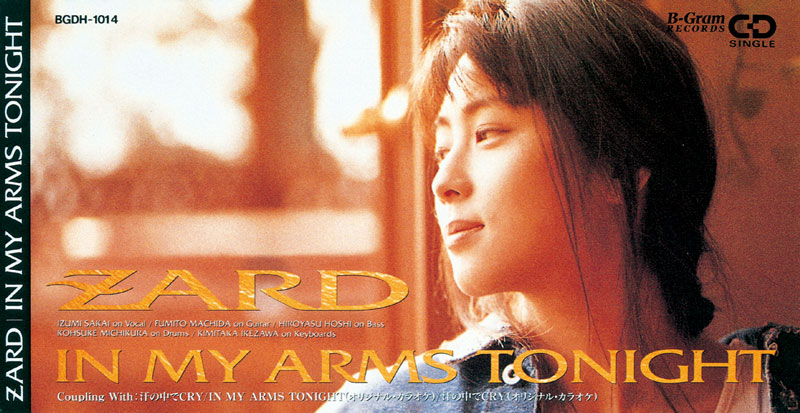 | |||||
| 1992.09.09 | |||||
| 6th | Makenaide 負けないで |
1. Makenaide（負けないで）(Lyrics: Izumi Sakai / Music: Tetsuro Oda / Arrangement: Takeshi Hayama)
2. Stray Love(Lyrics: Izumi Sakai / Music: Daria Kawashima / Arrangement: Masao Akashi)
3. Makenaide（負けないで）(original karaoke) 4. Stray Love (original karaoke) |
8cm CD PO・b.gram – PODH-1137 1993.01.27 8cm CD B-Gram Records – BGDH-1001 unreleased 8cm CD B-Gram Records – BGDH-1031 1994.01.01 Cassette PO・b.gram – POSH-1137 1993.01.27 12cm CD B-Gram Records – JBCJ-6022 (30th Anniversary Edition) 2020.02.10 |
Fuji TV Network drama “Bokutachi no Drama Series”（ボクたちのドラマシリーズ）“Shiratori Reiko de Gozaimasu! Season 1”（白鳥麗子でございます! 第1シリーズ）Ending Theme (#1) 66th Senbatsu High School Baseball Tournament（第66回選抜高等学校野球大会）Entrance March (#1) TV Saitama “Sydney 2000 Olympic Asian Qualifiers Send-Off Match”（シドニーオリンピック2000アジア地区予選 壮行試合）Theme Song (#1) Nippon TV Network “13th All Japan High School Quiz Championship”（第13回全国高等学校クイズ選手権）Ending Theme (#1) Chiba TV Network music information program “MU-GEN〜Music Generations〜” November 2006 Opening Theme (#1) NTT DoCoMo Vancouver Olympics-related “Ou'en in Vancouver-hen”（応援 in バンクーバー篇）CM Song from February 10, 2010 (#1) |
Wiki PV/CM |
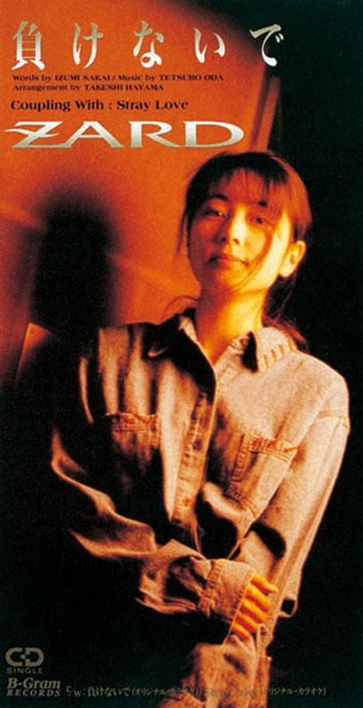 | |||||
| 1993.01.27 | |||||
| 7th | Kimi ga Inai 君がいない |
1. Kimi ga Inai（君がいない）(Lyrics: Izumi Sakai / Music: Seiichiro Kuribayashi / Arrangement: Masao Akashi)
2. Watashi dake Mitsumete（私だけ見つめて）(Lyrics: Izumi Sakai / Music: Seiichiro Kuribayashi / Arrangement: Masao Akashi)
3. Kimi ga Inai（君がいない）(original karaoke) 4. Watashi dake Mitsumete（私だけ見つめて）(original karaoke) |
8cm CD B-Gram Records – BGDH-1004 1993.04.21 12cm CD B-Gram Records – JBCJ-6023 (30th Anniversary Edition) 2020.02.10 |
Yomiuri TV/Nippon TV Network drama “Kanojo no Kirai na Kanojo”（彼女の嫌いな彼女）Theme Song (#1) | Wiki PV/CM |
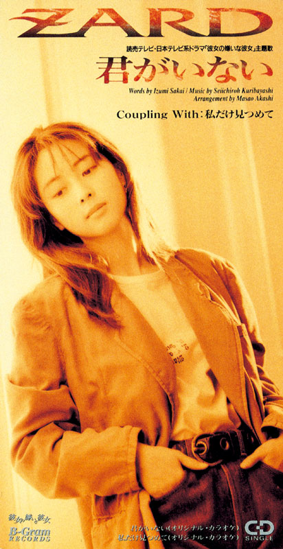 | |||||
| 1993.04.21 | |||||
| 8th | Yureru Omoi 揺れる想い |
1. Yureru Omoi（揺れる想い）(Lyrics: Izumi Sakai / Music: Tetsuro Oda / Arrangement: Masao Akashi)
2. Just for you(Lyrics: Izumi Sakai / Music: Seiichiro Kuribayashi / Arrangement: Masao Akashi, Daisuke Ikeda)
3. Yureru Omoi（揺れる想い）(original karaoke) 4. Just for you (original karaoke) |
8cm CD B-Gram Records – BGDH-1005 1993.05.19 12cm CD B-Gram Records – JBCJ-6024 (30th Anniversary Edition) 2020.02.10 |
Otsuka Pharmaceutical “Pocari Sweat” CM Song (#1) Chiba TV Network music information program “MU-GEN〜Music Generations〜” October 2006 Opening Theme (#1) Spotify (@SpotifyJP) “Anata no Hibi ni Ongaku wo: Jikka no Katazuke-hen 30-byou”（「あなたの日々に音楽を」実家の片付け篇 30秒）TV CM Song (#1) |
Wiki PV/CM |
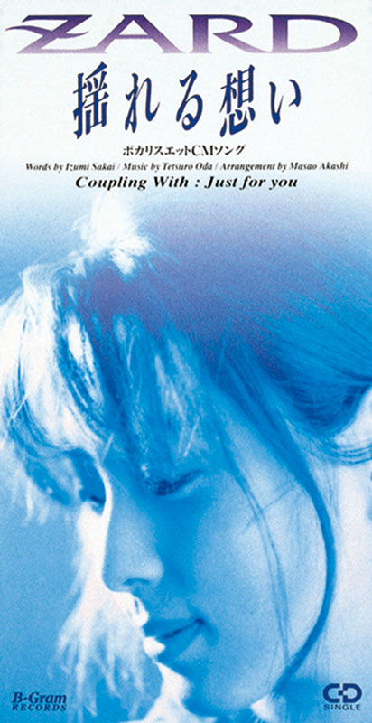 | |||||
| 1993.05.19 | |||||
| Kimi ga Inai/Yureru Omoi 君がいない／揺れる想い |
8cm CD B-Gram Records – BGDI-1001 (Promotional Release) |
||||
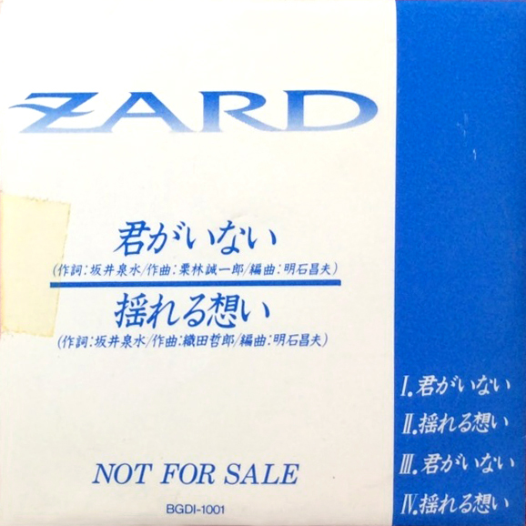 | |||||
| 9th | Mou Sukoshi Ato Sukoshi... もう少し あと少し… |
1. Mou Sukoshi Ato Sukoshi...（もう少し あと少し…）(Lyrics: Izumi Sakai / Music: Seiichiro Kuribayashi / Arrangement: Masao Akashi)
2. Kanariya（カナリヤ）(Lyrics: Izumi Sakai / Music: Seiichiro Kuribayashi / Arrangement: Masao Akashi)
3. Mou Sukoshi Ato Sukoshi...（もう少し あと少し…）(original karaoke) 4. Kanariya（カナリヤ）(original karaoke) |
8cm CD B-Gram Records – BGDH-1008 1993.09.04 12cm CD B-Gram Records – JBCJ-6025 (30th Anniversary Edition) 2020.02.10 |
TV Asahi Network drama “Lullaby Keiji '93”（ララバイ刑事'93）Ending Theme (#1) | Wiki PV/CM |
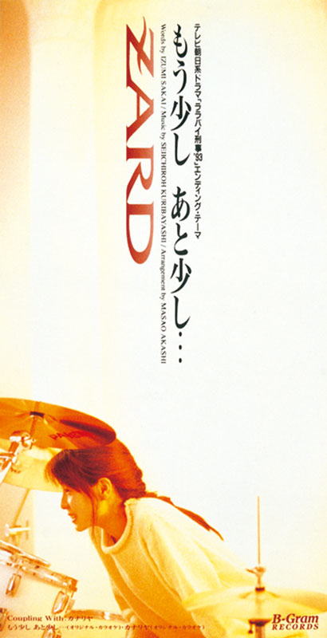 | |||||
| 1993.09.04 | |||||
| Mou Sukoshi Ato Sukoshi.../Kanariya もう少し あと少し…／カナリヤ |
8cm CD B-Gram Records – DCI-7001 (Promotional Release) |
||||
| 10th | Kitto Wasurenai きっと忘れない |
1. Kitto Wasurenai（きっと忘れない）(Lyrics: Izumi Sakai / Music: Tetsuro Oda / Arrangement: Masao Akashi)
2. Tasogare ni My Lonely Heart（黄昏にMy Lonely Heart）(Lyrics: Izumi Sakai / Music: Seiichiro Kuribayashi / Arrangement: Masao Akashi)
3. Kitto Wasurenai（きっと忘れない）(original karaoke) 4. Tasogare ni My Lonely Heart（黄昏にMy Lonely Heart）(original karaoke) |
8cm CD B-Gram Records – BGDH-1016 1993.11.03 12cm CD B-Gram Records – JBCJ-6026 (30th Anniversary Edition) 2020.02.10 |
Fuji TV Network drama “Bokutachi no Drama Series”（ボクたちのドラマシリーズ）“Shiratori Reiko de Gozaimasu! Season 2”（白鳥麗子でございます! 第2シリーズ）Ending Theme (#1) | Wiki PV/CM |
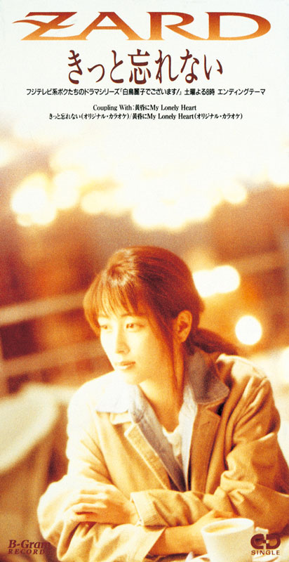 | |||||
| 1993.11.03 | |||||
| 11th | Kono Ai ni Oyogi Tsukarete mo/Boy この愛に泳ぎ疲れても／Boy |
1. Kono Ai ni Oyogi Tsukarete mo（この愛に泳ぎ疲れても）(Lyrics: Izumi Sakai / Music: Tetsuro Oda / Arrangement: Masao Akashi)
2. Boy(Lyrics: Izumi Sakai / Music: Seiichiro Kuribayashi / Arrangement: Masao Akashi)
3. Kono Ai ni Oyogi Tsukarete mo（この愛に泳ぎ疲れても）(original karaoke) 4. Boy (original karaoke) |
8cm CD B-Gram Records – BGDH-1033 1994.02.02 12cm CD B-Gram Records – JBCJ-6027 (30th Anniversary Edition) 2020.02.10 |
Kansai TV/Fuji TV Network drama “Ai to Giwaku no Suspense”（愛と疑惑のサスペンス）Opening Theme (#1) Yomiuri TV-produced film “Natsu no Niwa 〜The Friends〜”（夏の庭〜The Friends〜）Ending Theme (#2) |
Wiki PV/CM |
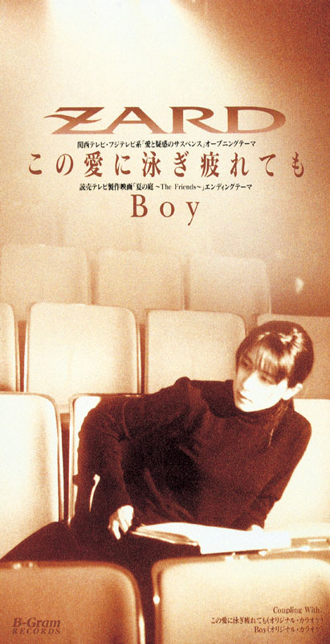 | |||||
| 1994.02.02 | |||||
| 12th | Konna ni Soba ni Iru no ni こんなにそばに居るのに |
1. Konna ni Soba ni Iru no ni（こんなにそばに居るのに）(Lyrics: Izumi Sakai / Music: Seiichiro Kuribayashi / Arrangement: Masao Akashi) 2. Anata no Sei ja Nai（あなたのせいじゃない）(Lyrics: Izumi Sakai / Music: Seiichiro Kuribayashi / Arrangement: Masao Akashi) 3. Konna ni Soba ni Iru no ni（こんなにそばに居るのに）(original karaoke) | 8cm CD B-Gram Records – BGDH-1039 1994.08.08 12cm CD B-Gram Records – JBCJ-6028 (30th Anniversary Edition) 2020.02.10 |
Boutique JOY（ブティックJOY）TV-CF Image Song (#1) | Wiki PV/CM |
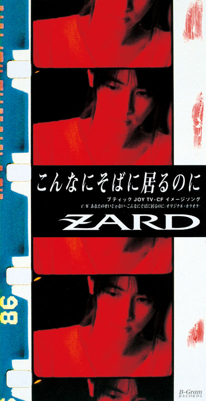 | |||||
| 1994.08.08 | |||||
| 13th | Anata wo Kanjite Itai あなたを感じていたい |
1. Anata wo Kanjite Itai（あなたを感じていたい）(Lyrics: Izumi Sakai / Music & Arrangement: Tetsuro Oda) 2. Take me to your dream(Lyrics: Izumi Sakai / Music: Daria Kawashima / Arrangement: Masao Akashi) 3. Anata wo Kanjite Itai（あなたを感じていたい）(original karaoke) | 8cm CD B-Gram Records – BGDH-1041 1994.12.24 12cm CD B-Gram Records – JBCJ-6029 (30th Anniversary Edition) 2020.02.10 |
NTT DoCoMo pager “Palfy V”（パルフィー V）CM Song (#1) | Wiki PV/CM |
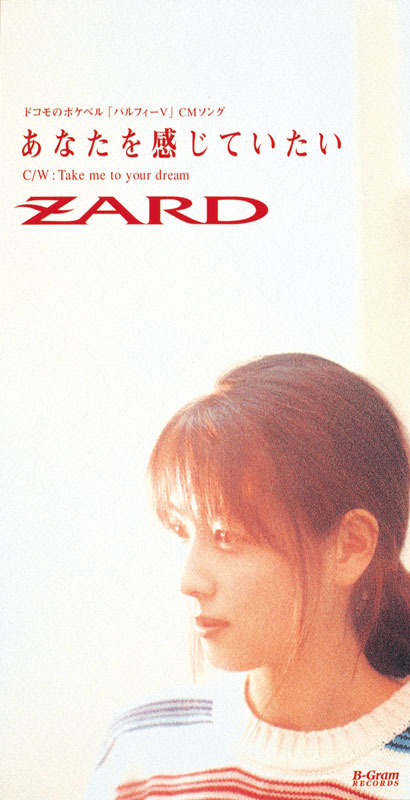 | |||||
| 1994.12.24 | |||||
| 14th | Just believe in love | 1. Just believe in love(Lyrics: Izumi Sakai / Music: Michiya Haruhata / Arrangement: Takeshi Hayama) 2. Ready, Go!(Lyrics: Izumi Sakai / Music: Daria Kawashima / Arrangement: Takeshi Hayama) 3. Just believe in love (original karaoke) | 8cm CD B-Gram Records – BGDH-1042 1995.02.01 12cm CD B-Gram Records – JBCJ-6030 (30th Anniversary Edition) 2020.02.10 |
TBS TV Network drama “Yureru Omoi”（揺れる想い）Theme Song (#1) | Wiki PV/CM |
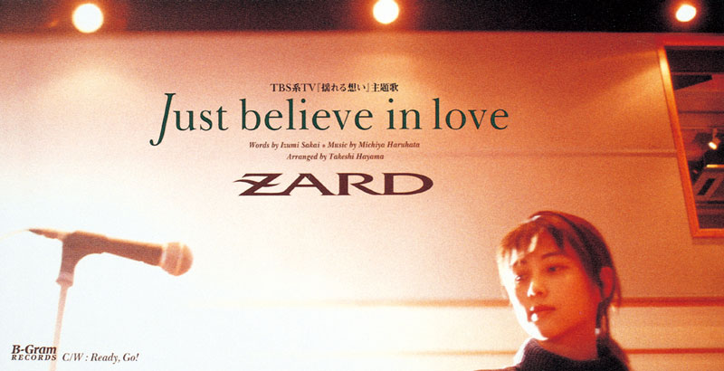 | |||||
| 1995.02.01 | |||||
| I'm in love | 8cm CD B-Gram Records – JBDI-1001 (Promotional Release / TOWER RECORDS SHIBUYA “SUPER STORE”) 1995.03.10 |
||||
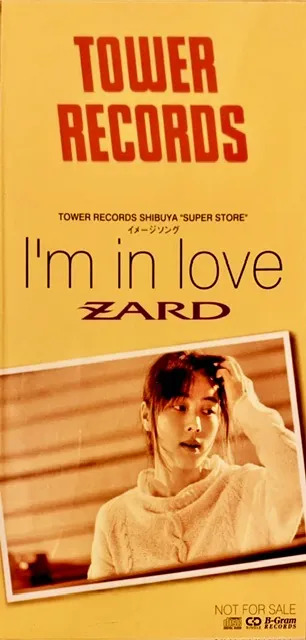 | |||||
| 1995.03.10 | |||||
| High Heel Nugi Sutete ハイヒール脱ぎ捨てて |
8cm CD B-Gram Records – JBDI-1002 (Promotional Release / OIOI TOKYO TASTE “Rooms” Viewer Giveaway) |
||||
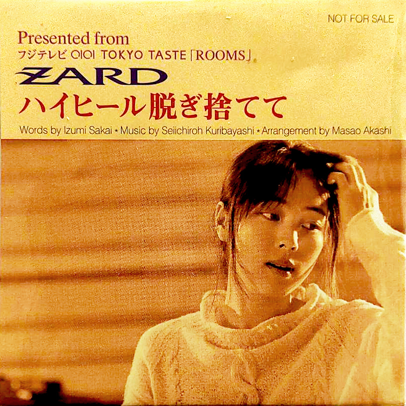 | |||||
| 15th | Ai ga Mienai 愛が見えない |
1. Ai ga Mienai（愛が見えない）(Lyrics: Izumi Sakai / Music: Masazumi Ozawa / Arrangement: Takeshi Hayama)
2. Teenage dream(Lyrics: Izumi Sakai / Music: Seiichiro Kuribayashi / Arrangement: Masao Akashi)
3. Ai ga Mienai（愛が見えない）(original karaoke) 4. Teenage dream (original karaoke) |
8cm CD B-Gram Records – JBDJ-1003 1995.06.05 B-Gram Records – JBDI-1003 (Promotional Release / Unverified) 12cm CD B-Gram Records – JBCJ-6031 (30th Anniversary Edition) 2020.02.10 |
SEA BREEZE '95 Image Song (#1) | Wiki PV/CM |
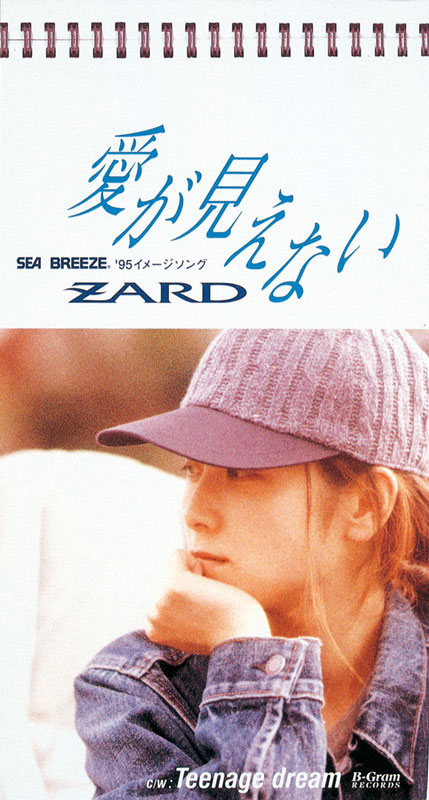 | |||||
| 1995.06.05 | |||||
| 16th | Sayonara wa Ima mo Kono Mune ni Imasu サヨナラは今もこの胸に居ます |
1. Sayonara wa Ima mo Kono Mune ni Imasu（サヨナラは今もこの胸に居ます）(Lyrics: Izumi Sakai / Music: Seiichiro Kuribayashi / Arrangement: Takeshi Hayama)
2. Nemuri（眠り）(Lyrics & Music: Izumi Sakai / Arrangement: Daisuke Ikeda)
3. Sayonara wa Ima mo Kono Mune ni Imasu（サヨナラは今もこの胸に居ます）(original karaoke) 4. Nemuri（眠り）(original karaoke) |
8cm CD B-Gram Records – JBDJ-1006 1995.08.28 12cm CD B-Gram Records – JBCJ-6032 (30th Anniversary Edition) 2020.02.10 |
Toei “Bokutachi no Eiga Series”（ぼくたちの映画シリーズ）film “Shiratori Reiko de Gozaimasu!”（白鳥麗子でございます!）Theme Song (#1) Nationwide 28-Station Network program “J-ROCK ARTIST Count Down 50” Ending Theme (#1) |
Wiki PV/CM |
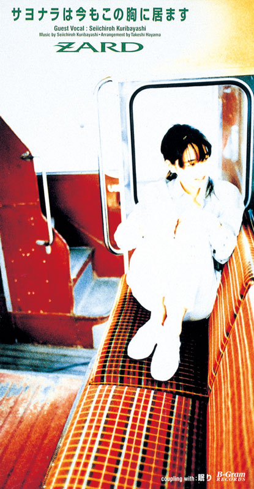 | |||||
| 1995.08.28 | |||||
| 17th | My Friend マイ フレンド |
1. My Friend（マイ フレンド）(Lyrics: Izumi Sakai / Music: Tetsuro Oda / Arrangement: Takeshi Hayama)
2. Mezameta Asa wa...（目覚めた朝は…）(Lyrics: Izumi Sakai / Music: Mitsuyoshi Yonezawa / Arrangement: Daisuke Ikeda)
3. My Friend（マイ フレンド）(original karaoke) 4. Mezameta Asa wa...（目覚めた朝は…）(original karaoke) |
8cm CD B-Gram Records – JBDJ-1011 1996.01.08 12cm CD B-Gram Records – JBCJ-6033 (30th Anniversary Edition) 2020.02.10 |
TV Asahi Network anime “SLAM DUNK”（スラムダンク）4th Ending Theme (#1) TV Tokyo Network game and esports variety program “Ariyoshieeeee! Sou da! Ima kara Omaenchi de Game Shinai?”（有吉ぃぃeeeee!そうだ!今からお前んチでゲームしない?）Episode 112 Ending Theme (#1) |
Wiki PV/CM |
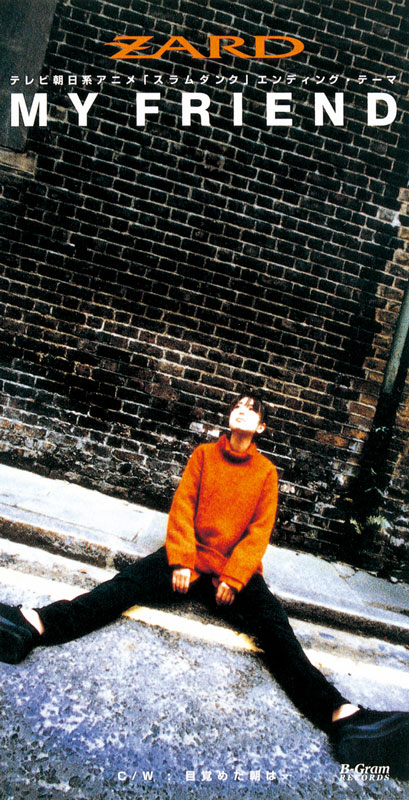 | |||||
| 1996.01.08 | |||||
| 18th | Kokoro wo Hiraite 心を開いて |
1. Kokoro wo Hiraite（心を開いて）(Lyrics: Izumi Sakai / Music: Tetsuro Oda / Arrangement: Daisuke Ikeda)
2. Change my mind(Lyrics: Izumi Sakai / Music: Seiichiro Kuribayashi / Arrangement: Takeshi Hayama)
3. Kokoro wo Hiraite（心を開いて）(original karaoke) 4. Change my mind (original karaoke) |
8cm CD B-Gram Records – JBDJ-1016 1996.05.06 12cm CD B-Gram Records – JBCJ-6034 (30th Anniversary Edition) 2020.02.10 |
Otsuka Pharmaceutical “Pocari Sweat” CM Song (#1) Mitsubishi Motors Corporation CM Song (#2) |
Wiki PV/CM |
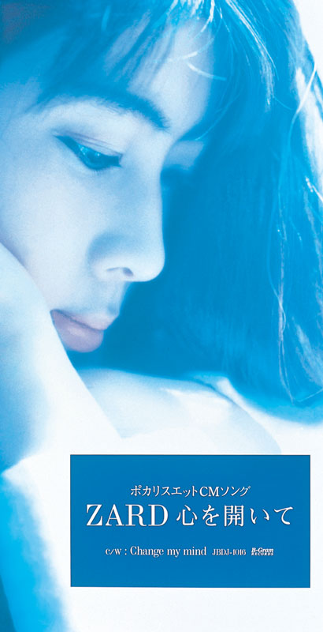 | |||||
| 1996.05.06 | |||||
| 19th | Don't you see! | 1. Don't you see!(Lyrics: Izumi Sakai / Music: Seiichiro Kuribayashi / Arrangement: Takeshi Hayama)
2. Kaeranu Jikan no Naka de（帰らぬ時間の中で）(Lyrics: Izumi Sakai / Music & Arrangement: Akihito Tokunaga)
3. Don't you see! (original karaoke) 4. Kaeranu Jikan no Naka de（帰らぬ時間の中で）(original karaoke) |
8cm CD B-Gram Records – JBDJ-1023 1997.01.06 12cm CD B-Gram Records – JBCJ-6035 (30th Anniversary Edition) 2020.02.10 |
Fuji TV Network anime “Dragon Ball GT”（ドラゴンボールGT）2nd Ending Theme (#1) Nippon TV Network “Imahito”（いまひと）Theme Song (#2) |
Wiki PV/CM |
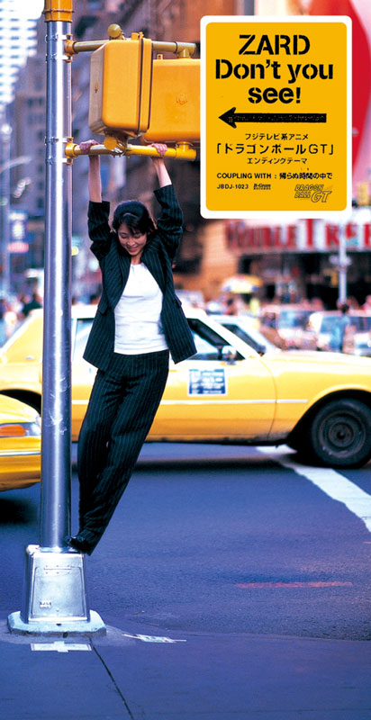 | |||||
| 1997.01.06 | |||||
| 20th | Kimi ni Aitaku Nattara... 君に逢いたくなったら… |
1. Kimi ni Aitaku Nattara...（君に逢いたくなったら…）(Lyrics: Izumi Sakai / Music: Tetsuro Oda / Arrangement: Takeshi Hayama)
2. Ai wo Shinjite Itai（愛を信じていたい）(Lyrics: Izumi Sakai / Music & Arrangement: Akihito Tokunaga)
3. Kimi ni Aitaku Nattara...（君に逢いたくなったら…）(original karaoke) 4. Ai wo Shinjite Itai（愛を信じていたい）(original karaoke) |
8cm CD B-Gram Records – JBDJ-1024 1997.02.26 12cm CD B-Gram Records – JBCJ-6036 (30th Anniversary Edition) 2020.02.10 |
TBS TV Network drama “Risou no Kekkon”（理想の結婚）Theme Song (#1) | Wiki PV/CM |
| 1997.02.26 | |||||
| 21st | Kaze ga Toori Nukeru Machi he 風が通り抜ける街へ |
1. Kaze ga Toori Nukeru Machi he（風が通り抜ける街へ）(Lyrics: Izumi Sakai / Music: Tetsuro Oda / Arrangement: Akihito Tokunaga)
2. Tooi Hoshi wo Kazoete（遠い星を数えて）(Lyrics: Izumi Sakai / Music: Seiichiro Kuribayashi / Arrangement: Akihito Tokunaga)
3. Kaze ga Toori Nukeru Machi he（風が通り抜ける街へ）(original karaoke) 4. Tooi Hoshi wo Kazoete（遠い星を数えて）(original karaoke) |
8cm CD B-Gram Records – JBDJ-1029 1997.07.02 12cm CD B-Gram Records – JBCJ-6037 (30th Anniversary Edition) 2020.02.10 |
Japan Racing Association “'97 Summer JRA” Campaign Song (#1) MBS Drama Tokku “Nishiogikubo Mitsuboshi Youshudou”（西荻窪 三ツ星洋酒堂）Ending Theme (2021) - SARD UNDERGROUND (cover) (#2) |
Wiki PV/CM |
| 1997.07.02 | |||||
| 22nd | Eien 永遠 |
1. Eien（永遠）(Lyrics: Izumi Sakai / Music & Arrangement: Akihito Tokunaga)
2. I can't let go(Lyrics: Izumi Sakai / Music: Seiichiro Kuribayashi / Arrangement: Hirohito Furui)
3. Eien（永遠）(original karaoke) 4. I can't let go (original karaoke) |
8cm CD B-Gram Records – JBDJ-1030 1997.08.20 12cm CD B-Gram Records – JBCJ-6038 (30th Anniversary Edition) 2020.02.10 |
Yomiuri TV/Nippon TV Network drama “Shitsurakuen”（失楽園）Theme Song (#1) Canon “NEW EOS Kiss” CM Song (#1) |
Wiki PV/CM |
| 1997.08.20 | |||||
| 23rd | My Baby Grand ～Nukumori ga Hoshikute～ My Baby Grand 〜ぬくもりが欲しくて〜 |
1. My Baby Grand ～Nukumori ga Hoshikute～（My Baby Grand 〜ぬくもりが欲しくて〜）(Lyrics: Izumi Sakai / Music: Tetsuro Oda / Arrangement: Daisuke Ikeda)
2. Love is Gone(Lyrics: Izumi Sakai / Music: Masaaki Watanuki / Arrangement: Daisuke Ikeda)
3. My Baby Grand ～Nukumori ga Hoshikute～（My Baby Grand 〜ぬくもりが欲しくて〜）(original karaoke) 4. Love is Gone (original karaoke) |
8cm CD B-Gram Records – JBDJ-1031 1997.12.03 12cm CD B-Gram Records – JBCJ-6039 (30th Anniversary Edition) 2020.02.10 |
NTT DoCoMo “DoCoMo '97 Winter”（ドコモ ’97-冬）CF Song (#1) Yomiuri TV/Nippon TV Network drama “Shitsurakuen: Tokubetsu-hen”（失楽園・特別編）Theme Song (#2) |
Wiki PV/CM |
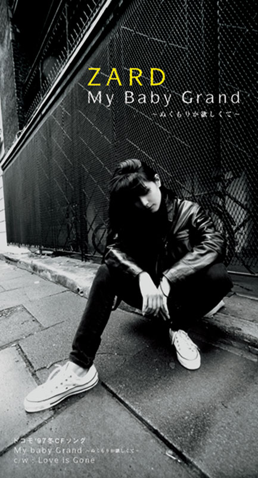 | |||||
| 1997.12.03 | |||||
| 24th | Iki mo Dekinai 息もできない |
1. Iki mo Dekinai（息もできない）(Lyrics: Izumi Sakai / Music: Tetsuro Oda / Arrangement: Takeshi Hayama)
2. Vintage(Lyrics: Izumi Sakai / Music & Arrangement: Akihito Tokunaga)
3. Iki mo Dekinai（息もできない）(original karaoke) 4. Vintage (original karaoke) |
8cm CD B-Gram Records – JBDJ-1036 1998.03.04 12cm CD B-Gram Records – JBCJ-6040 (30th Anniversary Edition) 2020.02.10 |
Fuji TV Network anime “Chuuka Ichiban!”（中華一番!）2nd Opening Theme (#1) | Wiki PV/CM |
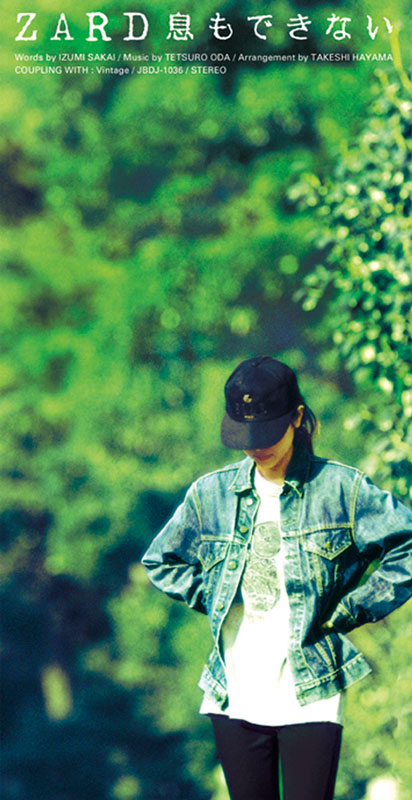 | |||||
| 1998.03.04 | |||||
| 25th | Unmei no Roulette Mawashite 運命のルーレット廻して |
1. Unmei no Roulette Mawashite（運命のルーレット廻して）(Lyrics: Izumi Sakai / Music: Seiichiro Kuribayashi / Arrangement: Daisuke Ikeda) 2. Shoujo no Koro ni Modotta Mitai ni（少女の頃に戻ったみたいに）(Lyrics: Izumi Sakai / Music: Aika Ohno / Arrangement: Daisuke Ikeda) 3. Unmei no Roulette Mawashite（運命のルーレット廻して）(original karaoke) | 8cm CD B-Gram Records – JBDJ-1041 1998.09.17 12cm CD B-Gram Records – JBCJ-6041 (30th Anniversary Edition) 2020.02.10 |
Yomiuri TV/Nippon TV Network anime “Meitantei Conan”（名探偵コナン）Opening Theme (#1) Yomiuri TV/Nippon TV Network anime special “Meitantei Conan Episode ‘ONE’: Chiisaku Natta Meitantei”（名探偵コナン エピソード“ONE” 小さくなった名探偵）Insert Song (#1) Nationwide Toho Youga-kei Roadshow “Meitantei Conan Movie 02: 14-banme no Target”（名探偵コナン 14番目の標的）Theme Song (#2) |
Wiki PV/CM |
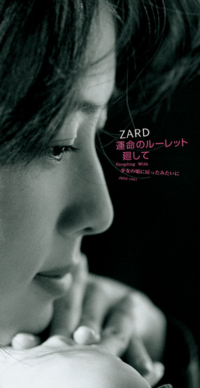 | |||||
| 1998.09.17 | |||||
| 26th | Atarashii Door ～Fuyu no Himawari～ 新しいドア 〜冬のひまわり〜 |
1. Atarashii Door ～Fuyu no Himawari～（新しいドア 〜冬のひまわり〜）(Lyrics: Izumi Sakai / Music: Masato Kitano / Arrangement: Hirohito Furui) 2. Atarashii Door ～Fuyu no Himawari～（新しいドア 〜冬のひまわり〜）(original karaoke) | 8cm CD B-Gram Records – JBDJ-1042 1998.12.02 12cm CD B-Gram Records – JBCJ-6042 (30th Anniversary Edition) 2020.02.10 |
Sapporo Breweries “Fuyu Monogatari”（冬物語）CM Song (#1) | Wiki PV/CM |
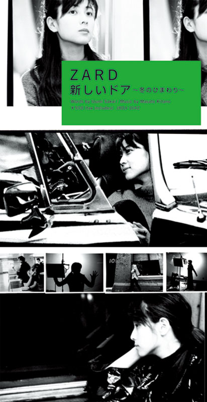 | |||||
| 1998.12.02 | |||||
| 27th | GOOD DAY | 1. GOOD DAY(Lyrics: Izumi Sakai / Music: Masaaki Watanuki / Arrangement: Daisuke Ikeda) 2. GOOD DAY (original karaoke) | 8cm CD B-Gram Records – JBDJ-1043 1998.12.02 12cm CD B-Gram Records – JBCJ-6043 (30th Anniversary Edition) 2020.02.10 |
Beautylabo “Natural Color”（ナチュラルカラー）CM Song (#1) | Wiki PV/CM |
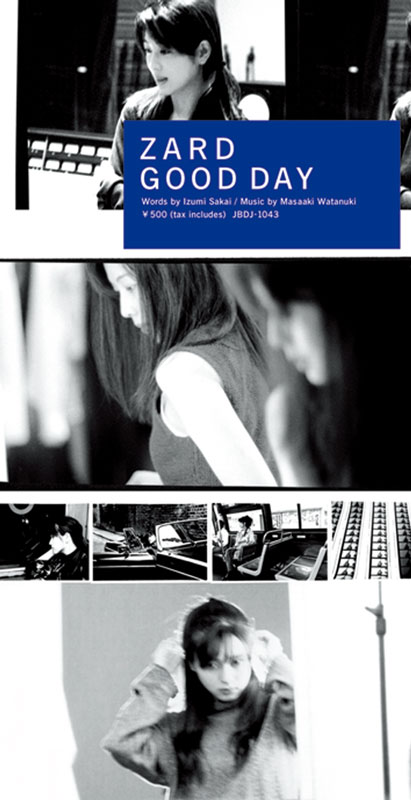 | |||||
| 1998.12.02 | |||||
| Atarashii Door ～Fuyu no Himawari～/GOOD DAY 新しいドア 〜冬のひまわり〜／GOOD DAY |
B-Gram Records – JBCI-1010 (Promotional Release) | ||||
| 28th | MIND GAMES | 1. MIND GAMES(Lyrics: Izumi Sakai / Music: Masaaki Watanuki / Arrangement: Masaaki Watanuki, Hirohito Furui) 2. Hypnosis(Lyrics: Izumi Sakai / Music: Hitoshi Okamoto / Arrangement: Hitoshi Okamoto, Hirohito Furui) 3. MIND GAMES (Redway Secret Mix)(Lyrics: Izumi Sakai / Music: Masaaki Watanuki / Arrangement: Masaaki Watanuki, Hirohito Furui) 4. MIND GAMES (original karaoke) | 12cm CD B-Gram Records – JBCJ-1022 unreleased 8cm CD B-Gram Records – JBDJ-1046 1999.04.07 12cm CD B-Gram Records – JBCJ-6044 (30th Anniversary Edition) 2020.02.10 |
Fuji TV Network sports program “Pro Yakyuu News”（プロ野球ニュース）Image Song (#1) Nippon Broadcasting System radio program “Show Up Nighter '99”（ショウアップナイター'99）Ending Theme (#1) |
Wiki PV/CM |
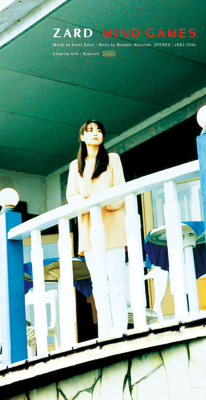 | |||||
| 1999.04.07 | |||||
| 29th | Sekai wa Kitto Mirai no Naka 世界はきっと未来の中 |
1. Sekai wa Kitto Mirai no Naka（世界はきっと未来の中）(Lyrics: Izumi Sakai / Music: Yuichiro Iwai / Arrangement: Akihito Tokunaga, Hirohito Furui, Kenji Shiojiri) 2. Sekai wa Kitto Mirai no Naka（世界はきっと未来の中）(original karaoke) | 8cm CD B-Gram Records – JBDJ-1047 1999.06.16 12cm CD B-Gram Records – JBCJ-6045 (30th Anniversary Edition) 2020.02.10 |
TV Asahi Network Thursday Mystery drama “Maiko-san wa Meitantei!”（舞妓さんは名探偵!）Theme Song (#1) | Wiki PV/CM |
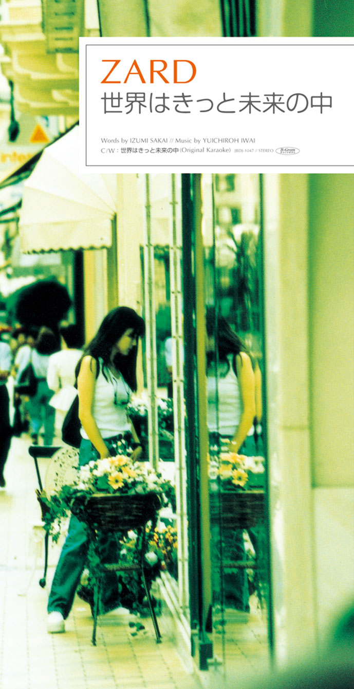 | |||||
| 1999.06.16 | |||||
| 30th | Itai Kurai Kimi ga Afureteiru yo 痛いくらい君があふれているよ |
1. Itai Kurai Kimi ga Afureteiru yo（痛いくらい君があふれているよ）(Lyrics: Izumi Sakai / Music & Arrangement: Kenji Shiojiri)
2. Itai Kurai Kimi ga Afureteiru yo (Re-Mix)（痛いくらい君があふれているよ (Re-Mix)）(Lyrics: Izumi Sakai / Music: Kenji Shiojiri / Remix: FAST ALVY and ME-YA)
3. Itai Kurai Kimi ga Afureteiru yo（痛いくらい君があふれているよ）(original karaoke) 4. Itai Kurai Kimi ga Afureteiru yo (Secret Track)（痛いくらい君があふれているよ（シークレットトラック））(Lyrics: Izumi Sakai / Music & Arrangement: Kenji Shiojiri) |
8cm CD B-Gram Records – JBDJ-1049 1999.10.14 12cm CD B-Gram Records – JBCJ-6046 (30th Anniversary Edition) 2020.02.10 |
Nestlé Japan “NESCAFÉ Moment”（ネスカフェモーメント）CM Song (#1) | Wiki PV/CM |
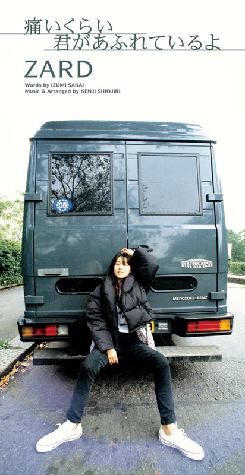 | |||||
| 1999.10.14 | |||||
| 31st | Kono Namida Hoshi ni Nare この涙 星になれ |
1. Kono Namida Hoshi ni Nare（この涙 星になれ）(Lyrics: Izumi Sakai / Music: Yuichiro Iwai / Arrangement: Hirohito Furui)
2. O・mo・hi・de（お・も・ひ・で）(Lyrics: Izumi Sakai / Music: Hiroshi Terao / Arrangement: Hirohito Furui, Akihito Tokunaga)
3. Kono Namida Hoshi ni Nare（この涙 星になれ）(original karaoke) 4. O・mo・hi・de（お・も・ひ・で）(original karaoke) 5. Kono Namida Hoshi ni Nare remix (Secret Track)（この涙 星になれ remix (シークレットトラック)）(Lyrics: Izumi Sakai / Music: Yuichiro Iwai / Arrangement: Hirohito Furui) |
12cm CD B-Gram Records – JBCJ-1027 1999.12.01 |
TV Asahi Network drama “Kasouken no Onna”（科捜研の女）Theme Song (#1) TV Asahi Network “Zeitaku na Kyuujitsu”（贅沢な休日）Theme Song (#2) “Change IZU 2000!”（チェンジ伊豆2000!）Image Song (#2) |
Wiki PV/CM |
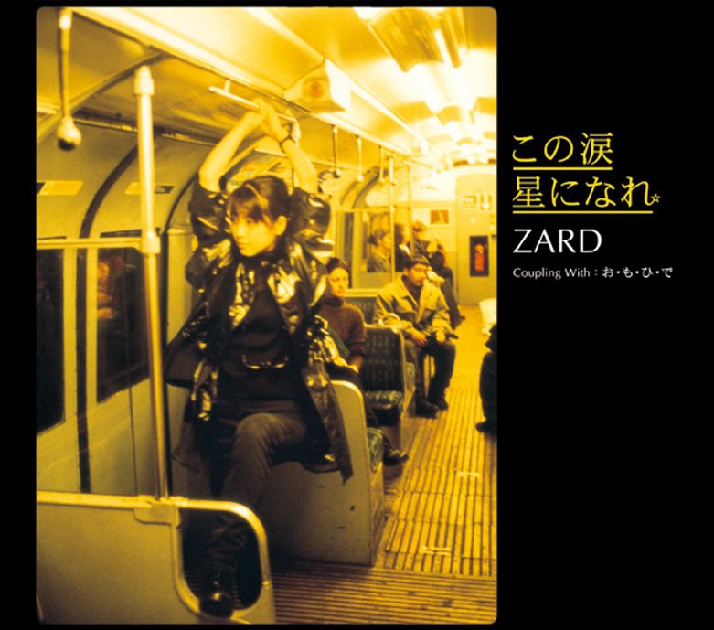 | |||||
| 1999.12.01 | |||||
| O・mo・hi・de お・も・ひ・で |
8cm CD B-Gram Records – JBDI-1007 (Promotional Release / CHANGE IZU 2000! IZU WAKAGAERU DAISAKUSEN meets ZARD) |
||||
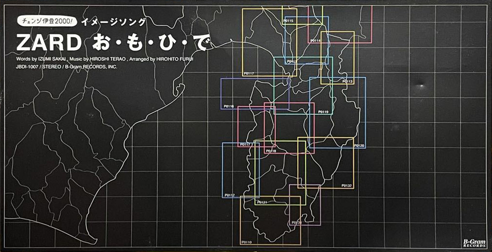 | |||||
| 32nd | Get U're Dream | 1. Get U're Dream(Lyrics: Izumi Sakai / Music: Aika Ohno / Arrangement: Takeshi Hayama)
2. Get U're Dream (Version Two)(Lyrics: Izumi Sakai / Music: Aika Ohno / Arrangement: Akihito Tokunaga)
3. Get U're Dream (Version Three)(Lyrics: Izumi Sakai / Music: Aika Ohno / Arrangement: YOKO Black. Stone)
4. Get U're Dream (original karaoke) 5. Get U're Dream (Perry Geyer Short Mix) (Secret Track)(Lyrics: Izumi Sakai / Music: Aika Ohno / Remix: Perry Geyer) |
12cm CD B-Gram Records – JBCJ-1031 2000.09.06 |
NHK Sydney Olympics Broadcast Theme Song (#1) | Wiki PV/CM |
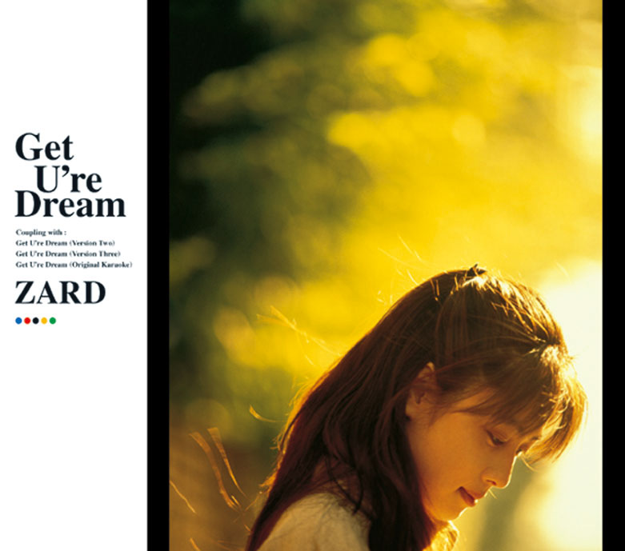 | |||||
| 2000.09.06 | |||||
| 33rd | promised you | 1. promised you(Lyrics: Izumi Sakai / Music: Seiichiro Kuribayashi / Arrangement: Cybersound) 2. The only truth I know is you(Lyrics: Izumi Sakai / Music & Arrangement: Akihito Tokunaga) 3. promised you (original karaoke) | 12cm CD B-Gram Records – JBCJ-1032 2000.11.15 |
TV Asahi Network two-hour drama program “Doyou Wide Gekijou”（土曜ワイド劇場）Ending Theme (#1) | Wiki PV/CM |
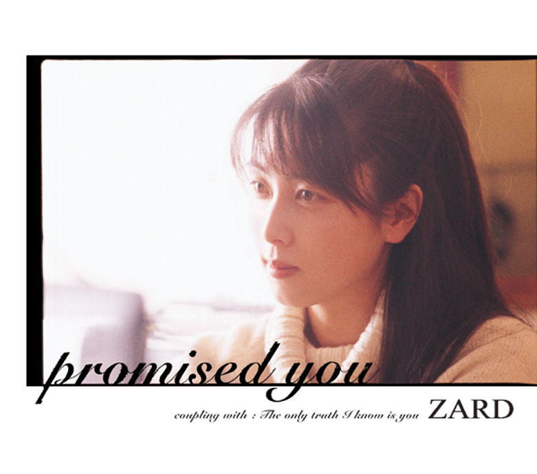 | |||||
| 2000.11.15 | |||||
| 34th | Sawayakana Kimi no Kimochi さわやかな君の気持ち |
1. Sawayakana Kimi no Kimochi（さわやかな君の気持ち）(Lyrics: Izumi Sakai / Music & Arrangement: Akihito Tokunaga) 2. Dakishimete Ite（抱きしめていて）(Lyrics: Izumi Sakai / Music & Arrangement: Akihito Tokunaga) 3. Seven Rainbow(Lyrics: Izumi Sakai / Music & Arrangement: Akihito Tokunaga) 4. Sawayakana Kimi no Kimochi（さわやかな君の気持ち）(original karaoke) | 12cm CD B-Gram Records – JBCJ-3001 2002.05.22 |
Nivea-Kao “8×4 (Eight Four)” CM Song (#1) Konami PlayStation 2 game “Tokimeki Memorial 3 〜Yakusoku no Ano Basho de〜”（ときめきメモリアル3 ～約束のあの場所で～）Bitter Ending Theme (#2) Konami PlayStation 2 game “Tokimeki Memorial 3 〜Yakusoku no Ano Basho de〜”（ときめきメモリアル3 ～約束のあの場所で～）Opening Theme (#3) |
Wiki PV/CM |
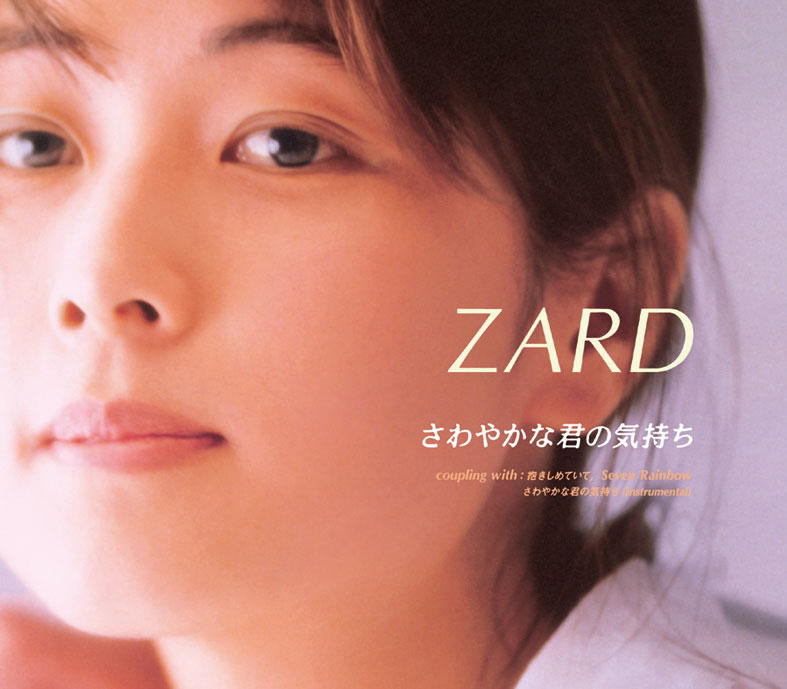 | |||||
| 2002.05.22 | |||||
| ZARD PREMIUM BOX 1991-2001 SINGLE COLLECTION (FC-Exclusive Release) | 34CD Box Set B-Gram Records – JBCD-2000 (1～34) (FC-Exclusive Release) 2002.09.10 |
||||
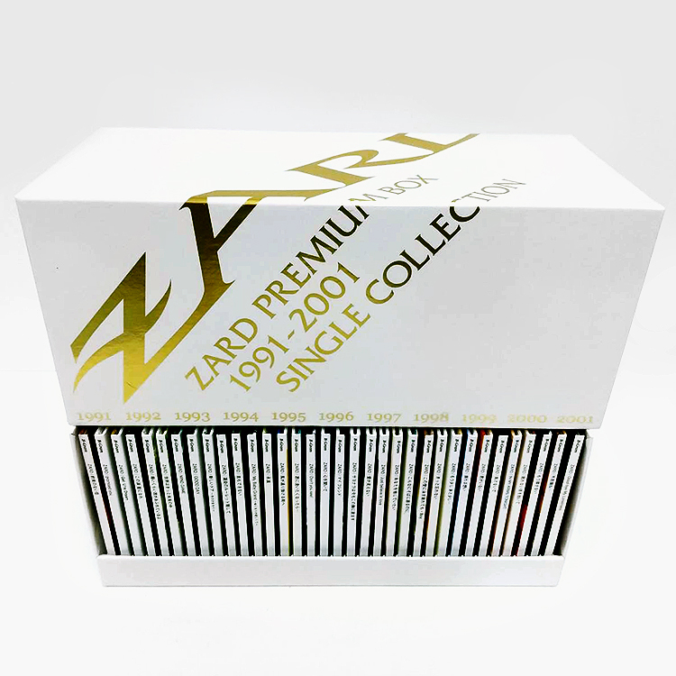 | |||||
| 2002.09.10 | |||||
| 35th | Ashita wo Yume Mite 明日を夢見て |
1. Ashita wo Yume Mite（明日を夢見て）(Lyrics: Izumi Sakai / Music: Aika Ohno / Arrangement: Satoru Kobayashi) 2. Sagashi ni Ikou yo（探しに行こうよ）(Lyrics: Izumi Sakai / Music & Arrangement: Akihito Tokunaga) 3. Ashita wo Yume Mite（明日を夢見て）(original karaoke) | 12cm CD B-Gram Records – JBCJ-6001 2003.04.09 |
Yomiuri TV/Nippon TV Network anime “Meitantei Conan”（名探偵コナン）Ending Theme (#1) | Wiki PV/CM |
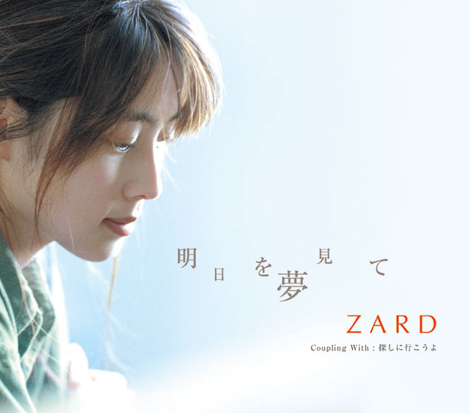 | |||||
| 2003.04.09 | |||||
| 36th | Hitomi Tojite 瞳閉じて |
1. Hitomi Tojite（瞳閉じて）(Lyrics: Izumi Sakai / Music: Aika Ohno / Arrangement: Akihito Tokunaga) 2. Itoshii Hito yo ～Na mo Naki Tabibito yo～（愛しい人よ 〜名もなき旅人よ〜）(Lyrics: Izumi Sakai / Music: Yuichiro Iwai / Arrangement: Yoshinobu Ohga) 3. Hitomi Tojite（瞳閉じて）(original karaoke) | 12cm CD B-Gram Records – JBCJ-6002 2003.07.09 |
Fuji TV Network sports program “Kandou Factory Suporuto!”（感動ファクトリー すぽると!）Image Song (#1) | Wiki PV/CM |
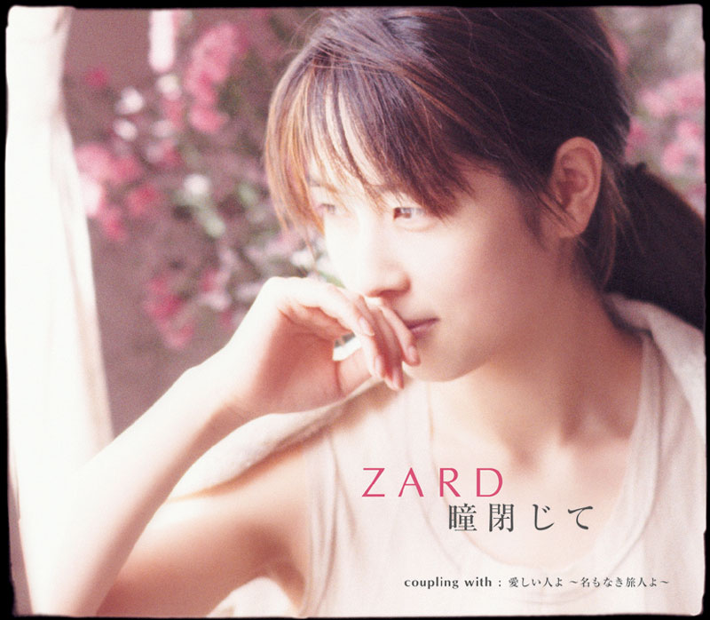 | |||||
| 2003.07.09 | |||||
| 37th | Motto Chikaku de Kimi no Yokogao Mitetai もっと近くで君の横顔見ていたい |
1. Motto Chikaku de Kimi no Yokogao Mitetai（もっと近くで君の横顔見ていたい）(Lyrics: Izumi Sakai / Music: Aika Ohno / Arrangement: Daisuke Ikeda) 2. Reset（リセット）(Lyrics: Izumi Sakai / Music: Makoto Miyoshi / Arrangement: Satoru Kobayashi) 3. Motto Chikaku de Kimi no Yokogao Mitetai（もっと近くで君の横顔見ていたい）(original karaoke) | 12cm CD B-Gram Records – JBCJ-6004 2003.11.12 |
Gekkeikan “Tsuki”（月）CM Song (#1) | Wiki PV/CM |
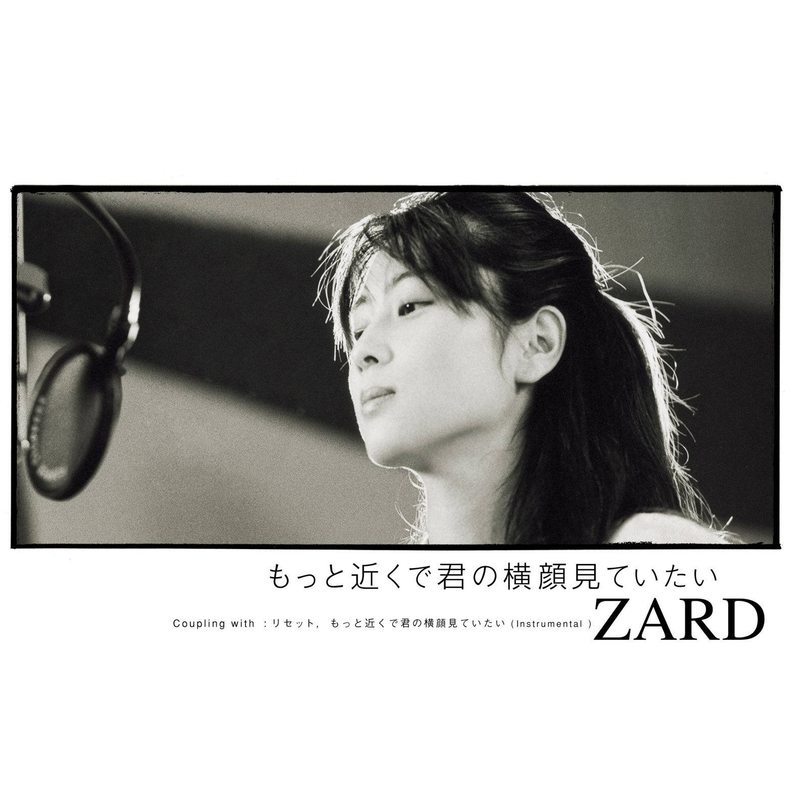 | |||||
| 2003.11.12 | |||||
| 38th | Kakegae no Nai Mono かけがえのないもの |
1. Kakegae no Nai Mono（かけがえのないもの）(Lyrics: Izumi Sakai / Music: Aika Ohno / Arrangement: Satoru Kobayashi) 2. Muga Muchuu（無我夢中）(Lyrics: Izumi Sakai / Music: Aika Ohno / Arrangement: night clubbers) 3. Eien (What a beautiful moment Tour Opening Ver.)（永遠 (What a beautiful moment Tour Opening Ver.)）(Music: Akihito Tokunaga / Arrangement: Daisuke Ikeda) 4. Kakegae no Nai Mono（かけがえのないもの）(original karaoke) | 12cm CD B-Gram Records – JBCJ-6005 unreleased 12cm CD B-Gram Records – JBCJ-4001 2004.06.23 |
TBS TV Network dating variety show “Koisuru Hanikami!”（恋するハニカミ!）Theme Song (#1) | Wiki PV/CM |
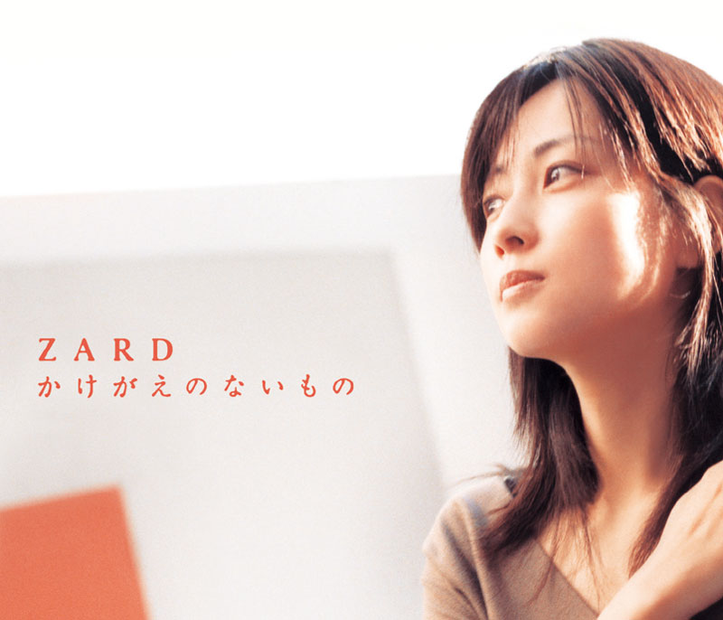 | |||||
| 2004.06.23 | |||||
| 39th | Kyou wa Yukkuri Hanasou 今日はゆっくり話そう |
1. Kyou wa Yukkuri Hanasou（今日はゆっくり話そう）(Lyrics: Izumi Sakai / Music: Aika Ohno / Arrangement: Akihito Tokunaga) 2. Awai Yuki ga Tokete（淡い雪がとけて）(Lyrics: Izumi Sakai / Music: Hiroshi Terao / Arrangement: Akihito Tokunaga) 3. Ame ga Furidasu Mae ni（雨が降り出す前に）(Lyrics: Izumi Sakai / Music: Yuichiro Iwai / Arrangement: Takeshi Hayama) 4. Kyou wa Yukkuri Hanasou（今日はゆっくり話そう）(original karaoke) | 12cm CD B-Gram Records – JBCJ-4002 2004.11.24 |
Gekkeikan “Tsuki”（月）CM Song (#1) | Wiki PV/CM |
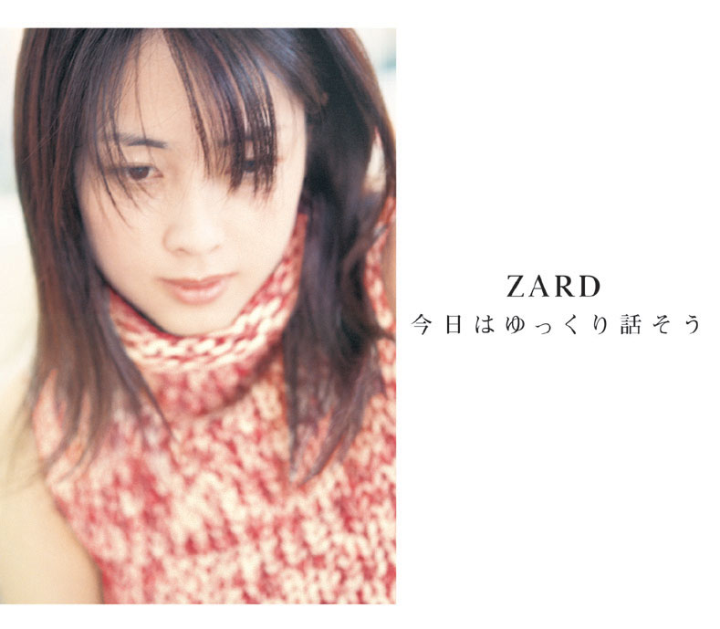 | |||||
| 2004.11.24 | |||||
| 40th | Hoshi no Kagayaki yo/Natsu wo Matsu Sail no You ni 星のかがやきよ／夏を待つセイル(帆)のように |
1. Hoshi no Kagayaki yo（星のかがやきよ）(Lyrics: Izumi Sakai / Music: Aika Ohno / Arrangement: Takeshi Hayama)
2. Natsu wo Matsu Sail no You ni（夏を待つセイル(帆)のように）(Lyrics: Izumi Sakai / Music: Aika Ohno / Arrangement: Takeshi Hayama)
3. Hoshi no Kagayaki yo (Instrumental)（星のかがやきよ (Instrumental)） 4. Natsu wo Matsu Sail (Ho) no You ni (Instrumental)（夏を待つセイル(帆)のように (Instrumental)） |
12cm CD B-Gram Records – JBCJ-6006 2005.04.20 |
Yomiuri TV/Nippon TV Network anime “Meitantei Conan”（名探偵コナン）Opening Theme (#1) Nationwide Toho Youga-kei Roadshow “Meitantei Conan Movie 09: Suihei Senjou no Strategy”（名探偵コナン 水平線上の陰謀）Theme Song (#2) |
Wiki PV/CM |
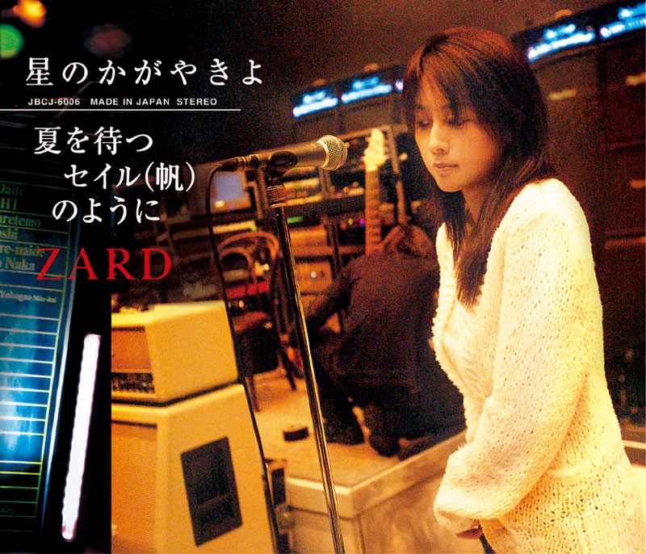 | |||||
| 2005.04.20 | |||||
| 41st | Kanashii Hodo Anata ga Suki/Karatto Ikou! 悲しいほど貴方が好き／カラッといこう! |
1. Kanashii Hodo Anata ga Suki（悲しいほど貴方が好き）(Lyrics: Izumi Sakai / Music: Aika Ohno / Arrangement: Takeshi Hayama)
2. Karatto Ikou!（カラッといこう!）(Lyrics: Izumi Sakai / Music: Aika Ohno / Arrangement: Takeshi Hayama)
3. Kanashii Hodo Anata ga Suki（悲しいほど貴方が好き）(original karaoke) 4. Karatto Ikou!（カラッといこう!）(original karaoke) |
12cm CD B-Gram Records – JBCJ-6007 2006.03.08 |
Yomiuri TV/Nippon TV Network anime “Meitantei Conan”（名探偵コナン）Ending Theme (#1) Fuji TV Network morning information program “Mezamashi Doyoubi”（めざましどようび）January–March 2006 Theme Song (#2) |
Wiki PV/CM |
| 2006.03.08 | |||||
| 42nd | Heart ni Hi wo Tsukete ハートに火をつけて |
1. Heart ni Hi wo Tsukete（ハートに火をつけて）(Lyrics: Izumi Sakai / Music: Aika Ohno / Arrangement: Takeshi Hayama) 2. Kimi e no Blues（君へのブルース）(Lyrics & Music: Izumi Sakai / Arrangement: Takeshi Hayama) 3. Heart ni Hi wo Tsukete ～Piano Instrumental Version～（ハートに火をつけて 〜ピアノ・インストゥルメンタル・バージョン〜）(Music: Aika Ohno / Arrangement: Akira Onozuka) 4. Heart ni Hi wo Tsukete（ハートに火をつけて）(original karaoke) | 12cm CD B-Gram Records – JBCJ-6008 (Limited Edition) 2006.05.10 12cm CD B-Gram Records – JBCJ-6009 (Regular Edition) 2006.05.10 |
TBS TV Network “Ai no Gekijou”（愛の劇場）drama “Suteki ni Common!”（すてきにコモン!）Theme Song (#1) | Wiki PV/CM |
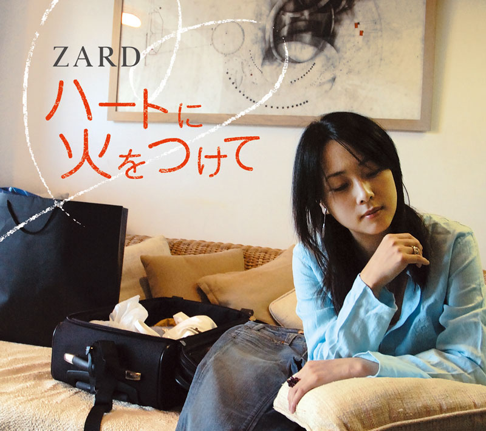 | |||||
| 2006.05.10 | |||||
| 43rd | Glorious Mind グロリアス マインド |
1. Glorious Mind（グロリアス マインド）(Lyrics: Izumi Sakai / Music: Aika Ohno / Arrangement: Takeshi Hayama) 2. Sagashi ni Ikou yo (2007 version)（探しに行こうよ (2007 version)）(Lyrics: Izumi Sakai / Music: Akihito Tokunaga / Arrangement: Takeshi Hayama) 3. Ai wo Shinjite Itai (2007 version)（愛を信じていたい (2007 version)）(Lyrics: Izumi Sakai / Music: Akihito Tokunaga / Arrangement: Takeshi Hayama) 4. Glorious Mind（グロリアス マインド）(original karaoke) | 12cm CD B-Gram Records – JBCJ-4003 2007.12.12 |
Yomiuri TV/Nippon TV Network anime “Meitantei Conan”（名探偵コナン）Opening Theme (#1) TV Asahi Network news program “Super J Channel”（スーパーJチャンネル）Ending Theme for the December 14, 2007 Broadcast (#1) Chiba TV Network music information program “MU-GEN〜Music Generations〜” December 2007 Opening Theme (#1) |
Wiki PV/CM |
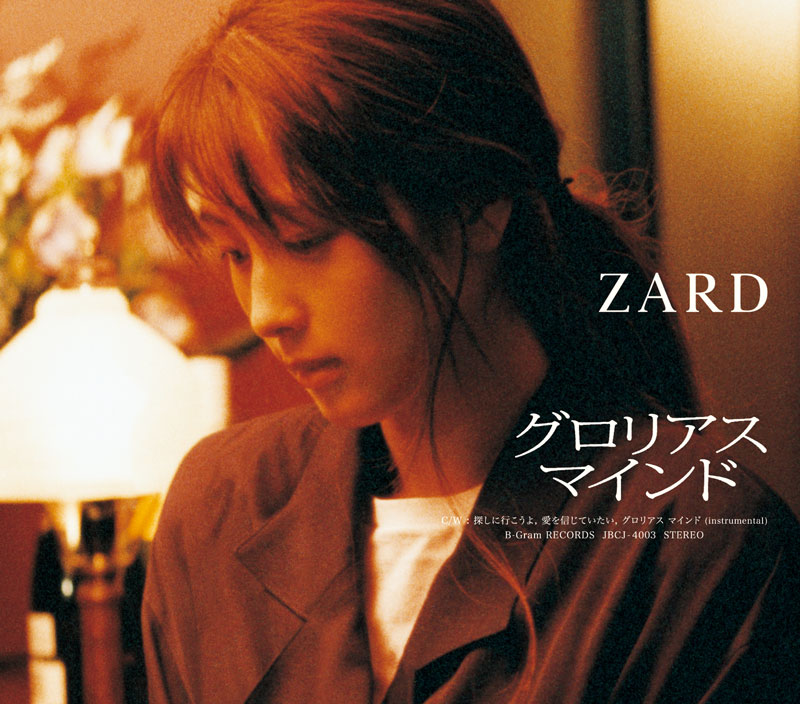 | |||||
| 2007.12.12 | |||||
| 44th | Tsubasa wo Hirogete/Ai wa Kurayami no Naka de 翼を広げて／愛は暗闇の中で |
1. Tsubasa wo Hirogete（翼を広げて）(Lyrics: Izumi Sakai / Music: Tetsuro Oda / Arrangement: Masao Akashi)
2. Ai wa Kurayami no Naka de featuring Aya Kamiki（愛は暗闇の中で featuring Aya Kamiki）(Lyrics: Izumi Sakai / Music: Seiichiro Kuribayashi / Arrangement: Siyon Morishita)
3. Tsubasa wo Hirogete（翼を広げて）(original karaoke) 4. Ai wa Kurayami no Naka de featuring Aya Kamiki（愛は暗闇の中で featuring Aya Kamiki）(original karaoke) |
CD+DVD B-Gram Records – JBCJ-6011 (Limited Edition / Bonus DVD: JBBB-6011) 2008.04.09 12cm CD B-Gram Records – JBCJ-6012 (Regular Edition) 2008.04.09 B-Gram Records – JBCI-6012 (Promotional Release / Unverified) |
Nationwide Toho Youga-kei Roadshow “Meitantei Conan Movie 12: Senritsu no Full Score”（名探偵コナン 戦慄の楽譜）Theme Song (#1) Chiba TV Network music information program “MU-GEN〜Music Generations〜” Ending Theme (#1) Yomiuri TV/Nippon TV Network anime “Meitantei Conan”（名探偵コナン）Opening Theme (#2) |
Wiki PV/CM |
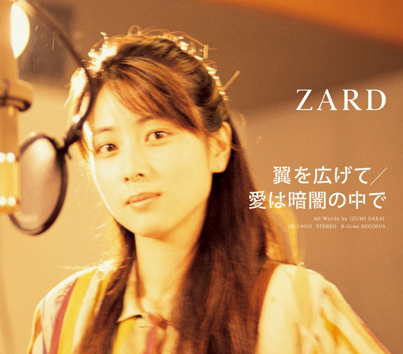 | |||||
| 2008.04.09 | |||||
| ZARD PREMIUM BOX 2002-2008 SINGLE COLLECTION (FC-Exclusive Release) | 15CD+1DVD Box Set B-Gram Records – JBCD-2008 (34～48) (FC-Exclusive Release) 2008.05.28 |
||||
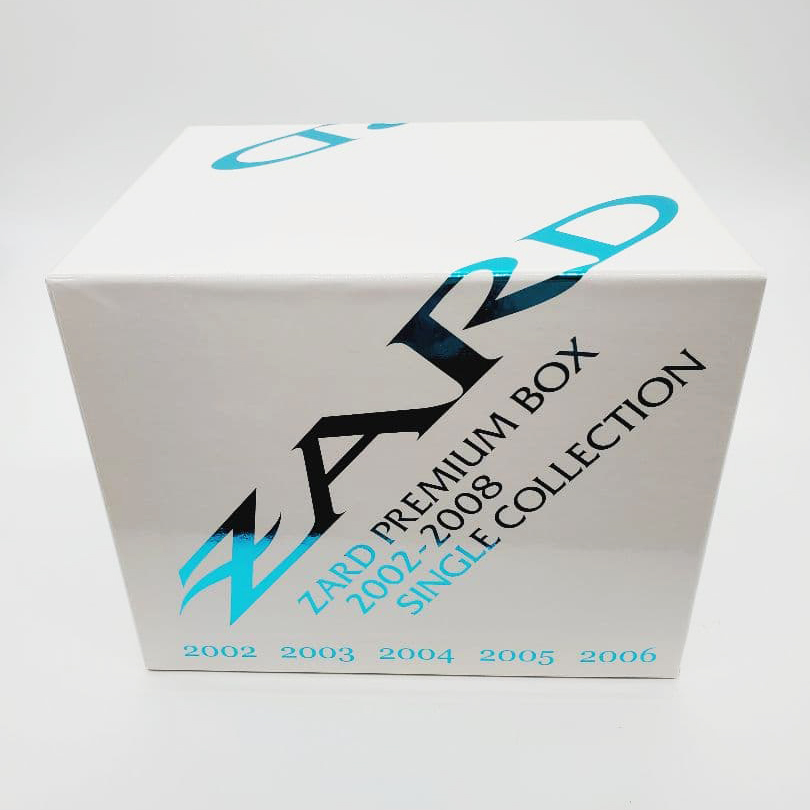 | |||||
| 2008.05.28 | |||||
| ZARD PREMIUM BOX 1991-2008 Complete Single Collection | 49CD+1DVD Box Set B-Gram Records – JBCD-2008 (1～49) 2008.05.28 |
||||
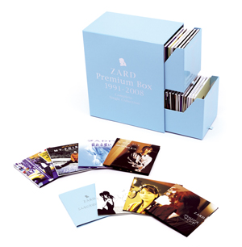 | |||||
| 2008.05.28 | |||||
| 45th | Sunao ni Ienakute 素直に言えなくて |
1. Sunao ni Ienakute ～featuring Mai Kuraki～（素直に言えなくて 〜featuring Mai Kuraki〜）(Lyrics & Music: Izumi Sakai / Arrangement: Hitoshi Okamoto)
2. Hypnosis(Lyrics: Izumi Sakai / Music & Arrangement: Hitoshi Okamoto)
3. Sunao ni Ienakute ～featuring Mai Kuraki～（素直に言えなくて 〜featuring Mai Kuraki〜）(original karaoke) 4. Hypnosis (original karaoke) |
CD+DVD B-Gram Records – JBCJ-6013 (Limited Edition / Bonus DVD: JBBB-6013) 2009.05.27 12cm CD B-Gram Records – JBCJ-6014 (Regular Edition) 2009.05.27 B-Gram Records – JBCI-6014 (Promotional Release / Unverified) |
Wiki PV/CM |
|
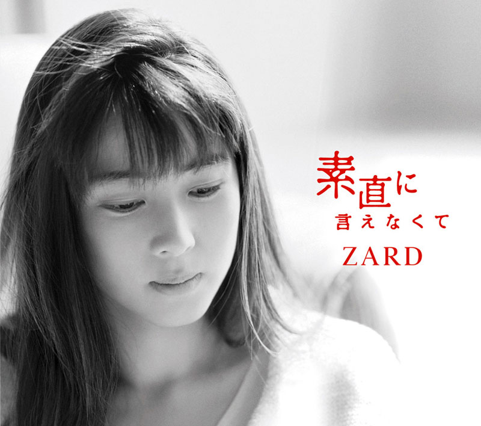 | |||||
| 2009.05.27 |